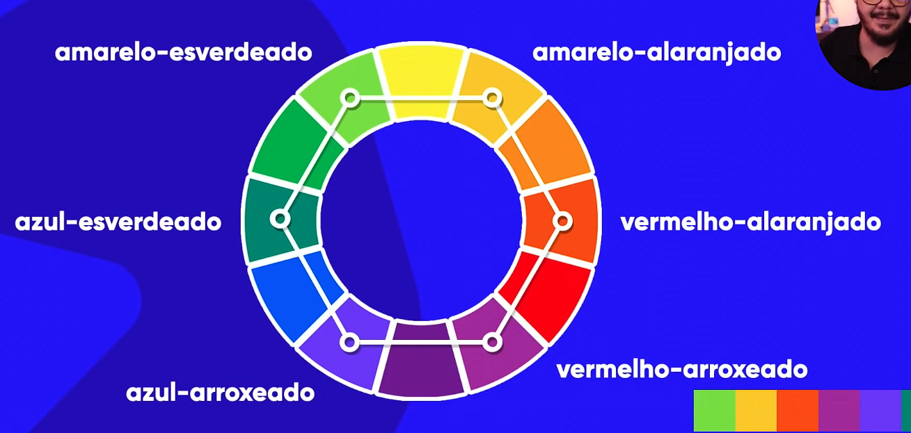
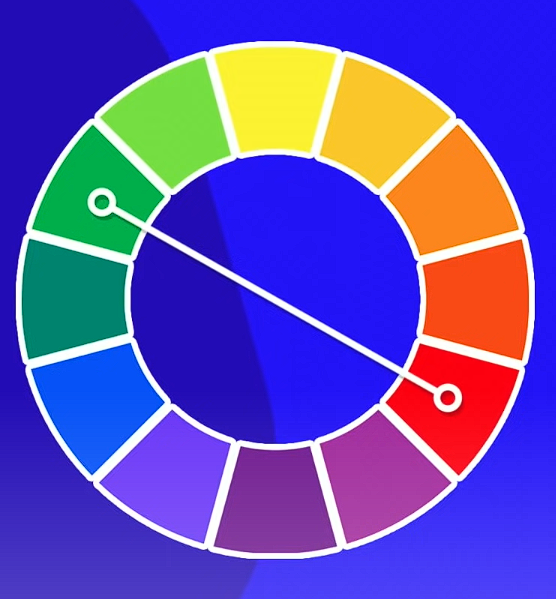
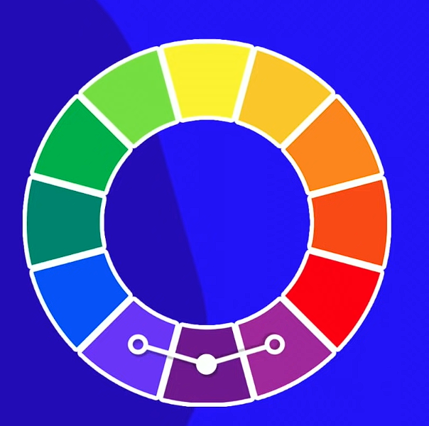
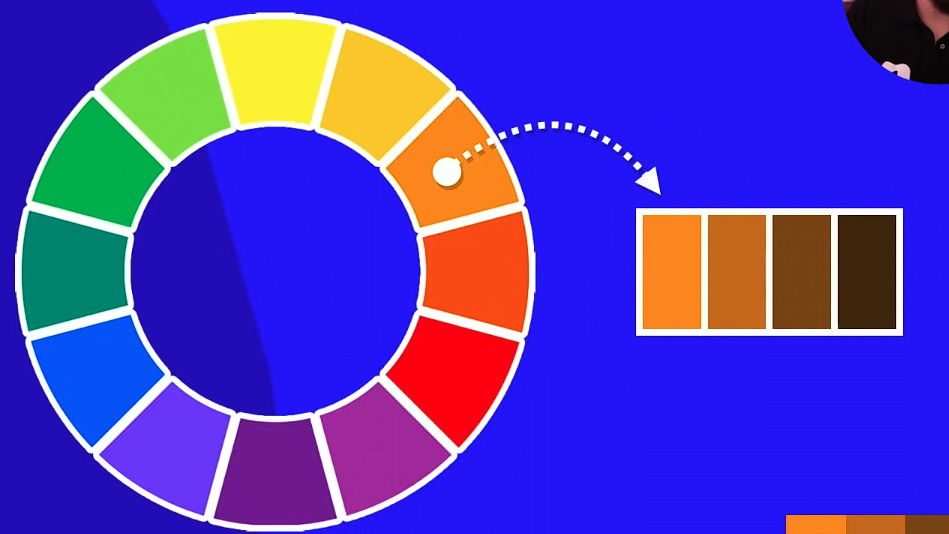

Você pode criar algumas paletas de cores em sites como:
ADOBE COLOR COOLORS PALETTONO circulo cromático possui todas as 65 milhões de cores em seu espectro.

As cores terciárias são cores no intervalo entre as cores primárias e secundárias. São chamadas, primeiro, pelo nome primário + nome secundário.
São cores com mais contrastam com outras, seu oposto.
As Cores Análogas são cores que não tem tanto contraste, mas são perceptíveis.
É uma característica que trabalha apenas com uma cor, alterando apenas a saturação e luminosidade.
